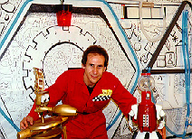
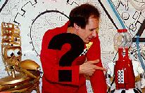

Escape From Seattle | Kill Roy | Doctor Who | Star Trek: The Pepsi Generation
What's Ryan Watching | The Wolfe Project | Mystery Science Theater 3000
Have I Got News For You | The 2001 Movies | Norwescon Movies | Meltdown
Complete Song Lyrics!
How to Get Copies
We've Canceled Our Next Production (updated)
New for 2005: Copies Now Available on DVD. See below
New for 2006: We canceled the next production!
Around the time William Shatner released Star Trek V, a TV show from Minnesota called Mystery Science Theater 3000 was gaining popularity for its skewering of awful old movies. It was a match made in heaven. The only trouble was the producers of MST3K couldn't afford an 'A' movie like Star Trek V. So it fell to us fans to do what needed to be done.

The original idea for doing the project came from Tony Case and Jeff Harris, two fans best known for their appearances in Star Trek: The Pepsi Generation. It took them several years of persuading before I was convinced that Mistying Star Trek V was a project worth doing. But the more I thought about it and talked with my friends, the more it seemed like a great opportunity.At first I figured we would just get a projection TV and sit in front of it casting shadows. Then I spoke with Chris McDonell who owned an Amiga Video Toaster and assured us he could do the "shadowrama" effect electronically, and also offered to let us use his large house as a studio. Why not? Tony went to work building the bots, while I subjected everyone I knew to watching the movie and carefully jotting down their jokes as it ran (this required me to sit through it more than 13 times before we were finished -- and if anyone is foolish enough to suggest to me that Star Trek V maybe isn't such an awful movie, I'd be happy to debate them otherwise.) I decided I needed to pull in my Number One Guns, and so I flew down to Los Angeles over Labor Day weekend 1992 to visit my friend Darrell Bratz and his roommate Sterling "Chuck" Jones. Darrell had co-written Star Trek: The Pepsi Generation with me and is, in my opinion, the funniest guy I know. Both were reluctant to contribute but as their cable TV was out for the entire weekend, they had not choice but participate. This is where the infamous "Rocks" song got written (originally based on a Martin Mull song called "Men" from his Columbus album). Also, most of the Star Wars jokes were added, mostly because Darrell and Chuck had just seen the trilogy a week earlier up in Santa Barbara. Ironically though, Darrell refused screen credit (later he admitted he wished he had gotten credit for the "Rocks" song), but Chuck said he didn't mind if I credited him (which leads to people mistaking him for the famous Warner Brothers animation director when they see his name). Jeff Harris was to play Tom Servo, with me playing Joel (although I don't think anyone thought I could pull it off until the movie was over), and Jeff's friend Matt Burke agreed to play Crow. Matt was a natural, with a million voices at his command and an ability to come up with obscure references.
The Satellite of Love set was "constructed" the night before we shot in a spare room at Chris's house, using a large sheet of white paper on which we drew the set using magic markers. Taping took place over two weekends in November of 1992. The first weekend we did ourselves "watching" the movie and making the jokes in a very cramped corner of Chris's spare room. In reality we were staring at a white wall, while simultaneously keeping an eye on a monitor showing the movie, a digital readout of the time-code (essential for getting the jokes right), and our scripts. Not to mention, Jeff and Matt were crammed on the floor and having to work their bots and turn the pages of their scripts at the same time. I was only able to read my script by having it on the floor and turning the pages with my toes! Somehow it all worked. The next day we taped all the appearances of "Dr Forrester and TV's Frank" doing their bits (done in Chris's garage--all that junk behind them really belongs to him!). The next weekend's taping consisted of our bits in the "Satellite of Love" control room. My friend James Ritzman then came over with his editing deck and we began editing as soon as taping was done that evening and finished the entire movie by 5 am the next morning! The video was premiered at Orycon in Portland, Oregon on November 21st, 1992. Subsequent to that, some minor editing changes were made, and the "official" version was released.
Despite its vast popularity (even more than Star Trek: The Pepsi Generation), I had no desire in doing another Mystery Science Theater 3000 production. One was enough, considering the huge amount of time required to write it. But fandom (and bad movies) wouldn't be kept waiting...
Mystery Science Theater 3000: Star Trek V
110 minutes. Hi-8mm videotape. Filmed and released November 1992.
Cast. . . Matt Burke as Crow, Ryan K. Johnson as Joel
Robinson, Jeff Harris as Tom Servo, Terry Wyatt as Doctor
Forrester, Tony Case as TV's Frank.
Written by Teresa Appelgate, Janet Borkowski, Matt Burke, Tony
Case, Henry Gonzalez, Jeff Harris, Brian Hunt, Ryan K. Johnson,
Valery King, Chuck Jones, Doris O'Connor, Lisa Reay, William
Sadorus, Rachel Sinclair, Jeff Stout, Jim Taylor, Julia Taylor,
Lisa Van Every, Gary Watts.
Produced and Directed by Ryan K. Johnson
Sequels seem to be bad news, and this was never more so true than this turgid afterthought to the quirky original Highlander. Although I didn't feel that Highlander II lent itself to Mistying as well as Star Trek V did (not to mention how less well-known it was to fans), nevertheless, the comic possibilities did present themselves. The only problem was by the time we decided to make the movie, I had moved to London, England! Tony Case decided to take the reins of production and a writing session was hastily scheduled while I visited Seattle for a two week period in June 1993. (Meanwhile, back in England our Star Trek V was a huge hit, even among people who had never heard of Mystery Science Theater 3000 before.) Subsequently, Tony send me the script as a work-in-progress and I was able to show the movie to my usual collaborator Darrell Bratz as he visited me in London for two weeks.
By the time I returned to America in November 1993, Tony still wasn't ready to shoot. I moved this time to Los Angeles and awaited the call for when production would commence. It finally came in July 1994, and I drove up to Seattle to do my bit as Joel. Chris McDonell had kept the original sets up all this time, and it was easy to get back into the groove to record all the scenes in one weekend. One change in the cast was a near-perfect replica of Tom Servo that was provided by professional LA-based model maker Max Cervantes. To reflect this, Chris redid the credits and was able to make a new tunnel sequence into the theater using his Video Toaster.
Chris edited the movie during that fall and presented us with a rough cut in November 1994. We decided to remix the sound and add subtitles during "Guy Thing" so folks could understand the lyrics. The final version was mastered at Sharon Demuth's house and premiered at Norwescon in April 1995.
Mystery Science Theater 3000: Highlander II
93 minutes. Hi-8mm videotape. Filmed July 1994, released April
1995.
Cast. . . Matt Burke as Crow, Ryan K. Johnson as Joel
Robinson, Jeff Harris as Tom Servo, Terry Wyatt as Doctor
Forrester, Tony Case as TV's Frank.
Written by Darrell Bratz, Mel Carter, Tony Case, Cardinal Cox,
Jeff Harris, Todd Hodges, Ryan K. Johnson, Mike Rotton, Ian
Smithers, Jeff Stout, Terry Wyatt.
Produced by Tony Case. Directed by Tony Case and Sharon Demuth.
Here now are the lyrics to the popular songs which appeared in each movie.
Rocks rocks
rocks rocks
Rocks rocks rocks rocks
Rocks rocks rocks
The mountain's full of rocks
You'll never have to scratch and itch
Just rub it on the
Rocks rocks rocks rocks
Rocks rocks rocks rocks
We climb the rocks because they're there
They're all so hard and manly
We don't use spikes, picks or ropes
We use our little handsies
We use our little handsies
Rocks rocks rocks rocks
Rocks rocks rocks rocks
Rocks rocks rocks
Our pants get full of rocks
They're even in our underwear
We really like the
Rocks rocks rocks rocks
Rocks rocks rocks rocks
I wish these rocks were bigger rocks
As big as rocks could get-o
I'd climb and climb and climb and climb
And climb and climb and climb-o.
Second Verse:
Rocks rocks rocks
My love affair with rocks
Society won't understand
And here comes Mr. Spock.
Later in the movie:
Guy thing...I think I control you,
But I never know for sure.
Everytime the plot begins to drag,
I get this urge to pull out my,
Guy thing
My big ol' quickening,
Violent mood swing,
Guy thing...
All the above listed movies are available directly from Ryan K. Johnson if you send him a blank VHS tape (two if you want both) and postage money (within the United States: $3.95, foreign requests add much more). All tapes are copied in SP speed (2 hour mode) and I can do them in NTSC (American format) or PAL (if you ask for it specifically).
Now also available on DVD, one disc per movie (home-made DVD-R format made on a Toshiba RD-XS52, may not be compatible on all players). $2 for one movie, $3 for both including shipping.
For mailing instructions or more information, e-mail Ryan at rkj@eskimo.com. Please specify which movies you are interested in.
For 10 years we had a completed script for a third MST3K production. What prevented us from doing it was not being able to find a broadcast-quality copy of this unreleased fantastic movie. And then someone beat us to the punch! Check out Mystery Spatula Theater 11's version of "Fantastic Four." They did a great job and our hats are off to them for doing this deserving turkey. It's been over a decade since we last got together to do MST3K and it's probably time we hung up our hats. That is unless a movie comes out that is so bad, so pretentious, that we are compelled to give it the MST treatment. Until that day though, thanks for enjoying our two other productions which will remain available on DVD..

This MSTings Ring site owned by Ryan K. Johnson.
[ Previous
5 Sites | Previous
| Next
| Next
5 Sites | Random
Site | List
Sites ]
 Back to Ryan's
Homepage
Back to Ryan's
Homepage
Escape From Seattle | Kill Roy | Doctor
Who | Star Trek: The Pepsi
Generation
What's Ryan Watching | The Wolfe Project | Mystery
Science Theater 3000
Have I Got News For You | The 2001 Movies | Norwescon
Movies | Meltdown